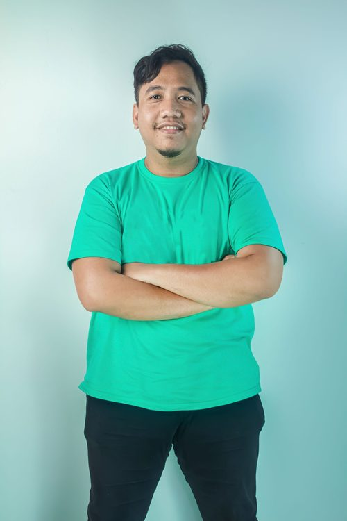

Irwan Ardiansyah
I design and scale backend systems and AI-powered features across fintech, healthtech, IoT, and edtech — from architecting LLM-driven recommendations to modernizing monoliths into microservices that hold up under real production load.
Work experience
Senior Fullstack Engineer
Aug 2023 — Present- Developed and maintained scalable backend APIs with NestJS, AWS RDS, and BullMQ for a production B2B platform.
- Spearheaded the MyConnect 2.0 migration from AWS Amplify–managed logic to a modular NestJS architecture.
- Engineered infrastructure supporting 5,000 concurrent users during high-scale conference events.
- Integrated Anthropic AI-powered recommendation services into backend workflows.
- Led cloud migration from AWS to Azure with zero service disruption.
Project Manager (Freelance)
Feb 2024 — Jun 2026- Managed cross-functional teams of 4–8 across 6 enterprise projects for Adira, Suzuki, Mitsubishi and Trakindo.
- Delivered Adira Appraisal 2.0, a nationwide debt-collateral platform for field collectors.
- Optimized Suzuki's internal tool ecosystem, stable at 2,000 concurrent users through peak Lebaran traffic.
- Supported Mitsubishi Connected Cars' IoT telemetry pipeline (Go, Python).
- Led the Trakindo SAT Dashboard and Yakult YTopia deliveries, plus performance work on Halo Suzuki App.
Lead Back End Engineer
Jan 2023 — Nov 2023- Led backend development and technical direction for a secure mental healthcare platform.
- Designed database architecture supporting thousands of active users.
- Built OpenAPI-based B2B integrations and a personality-assessment web platform.
- Integrated Xendit for reliable payment processing.
- Contributed to Teduh.io's recognition as a Google Play Award 2023 Hidden Gem.
Back End Engineer
Oct 2022 — Jul 2023- Built a Python Flask microservice for quiz scoring, decoupled from the core NestJS backend.
- Architected the backend for a gamified quiz platform unifying a React web app and a Unity game client.
- Modeled MongoDB schemas for high-volume sessions, results, and progress tracking.
- Owned API contracts between the frontend and Unity teams; drove OKR-based delivery cadence.
Back End Engineer
Jan 2022 — Sep 2022- Built backend services for an F&B POS platform with e-wallet and e-banking integrations.
- Migrated core data to PostgreSQL, improving query performance by ~40%.
- Designed a sales analytics dashboard on AWS S3.
Back End Engineer
Feb 2021 — Dec 2021- Maintained Indonesia's National Single Window (INSW) system — a national trade & customs platform.
- Implemented SOAP-based integrations with external government systems.
- Developed and optimized RESTful APIs across the INSW ecosystem.
Featured projects
A closer look at what I actually built at each stop — architecture decisions, integrations, and the scale they ran at.
A B2B employee engagement platform driving continuous upskilling and mentorship across organizations.
A secure, scalable mental healthcare platform for therapy services and sensitive health data.
A game-based learning platform integrated with Unity for real-time gameplay and progression.
A POS platform for F&B merchants covering payments, delivery, and sales analytics.
A national platform integrating trade and customs data across Indonesian government agencies.
Technical skills
Certifications & education
- Non Diploma AI Engineering — Gramedia Academyongoing, est. Oct 2026
- RAG and Agentic AI Professional Certificate — IBM2026
- Best Hidden Gem App — Google Play Award, Teduh.io2023
- AWS Cloud Operation — Kominfo Scholarship2022
- Flutter Development — Jabar Coding Camp2022
- AWS Academy Cloud Foundation2021
- Backend Developer Bootcamp — Glints Academy Batch 82020